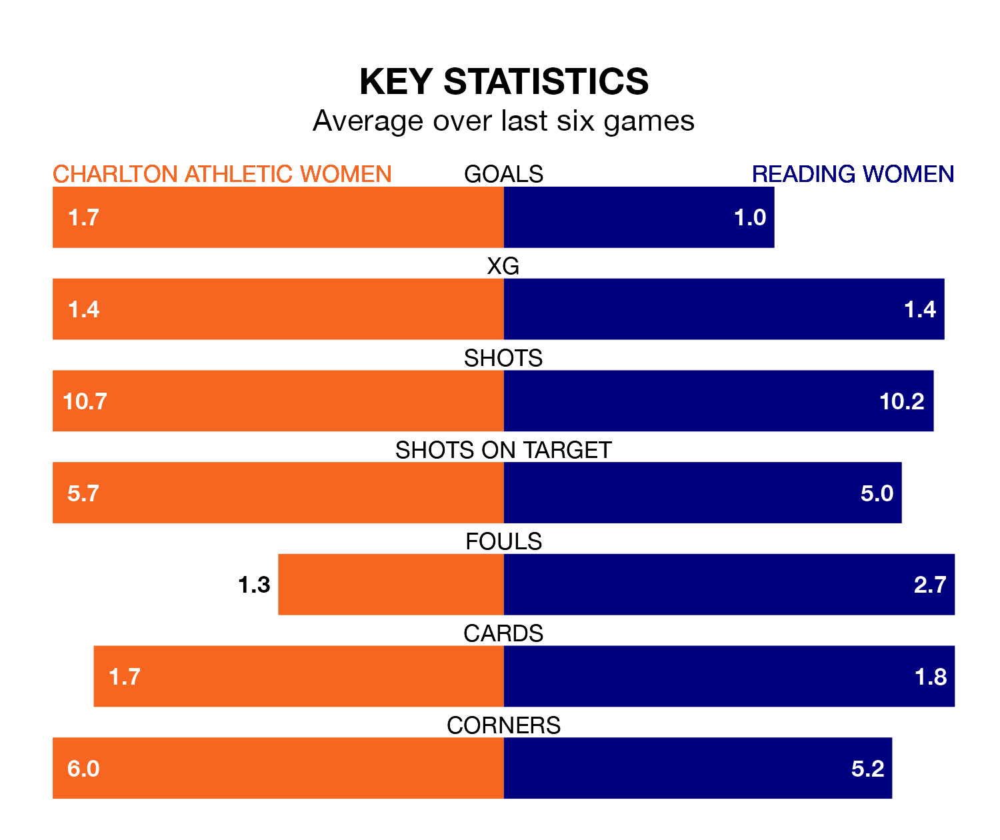

Relegation candidates Reading Women face a challenge away against high-flying Charlton Athletic Women at the Oakwood on Sunday.
Reading Women are 10th in the FA Women's Championship table, and have picked up three wins and six draws in their 14 games to date.
Charlton Athletic, meanwhile, are third in the standings with 30 points, having won eight and drawn six of their first 15 matches, and are four points behind table-toppers Sunderland Women.
In Sian Rogers, Charlton Athletic can rely on one of the league's safest pair of hands. She has kept five clean sheets in her 12 appearances this season, and only one other 'keeper – Sunderland Women's Claudia Moan – has been able to prevent the opposition scoring on more occasions in the FA Women's Championship.
In Reading's net, Emily Orman also has five clean sheets in 13 games. She has conceded a goal every 73 minutes, twice as often as the 147 minutes between goals for Rogers.
With 14 goals in 14 games so far this season, the Royals are the league's second-lowest scorers with 1.0 goals per game. And they are conceding at an average rate, letting in 19 goals at a rate of 1.4 per game.
The hosts, meanwhile, are above average scorers, with 1.5 goals per game, compared to a league average of 1.4. They have conceded 0.9 goals per game.
Charlton Athletic are in reasonable form in the FA Women's Championship, with three wins and three draws from their last six games.
With a win and three draws over that period, the away side's form is much worse – they have taken six points from 18, compared to Charlton Athletic's 12.
Charlton Athletic's last match was on February 4, a 1-1 draw against Lewes Women, with Tegan McGowan getting the goal for Charlton Athletic.
Reading lost 2-1 against London City Lionesses last time out, on March 3, with Brooke Hendrix on the scoresheet.
Updated: 09:34 (UTC), 08/03/24